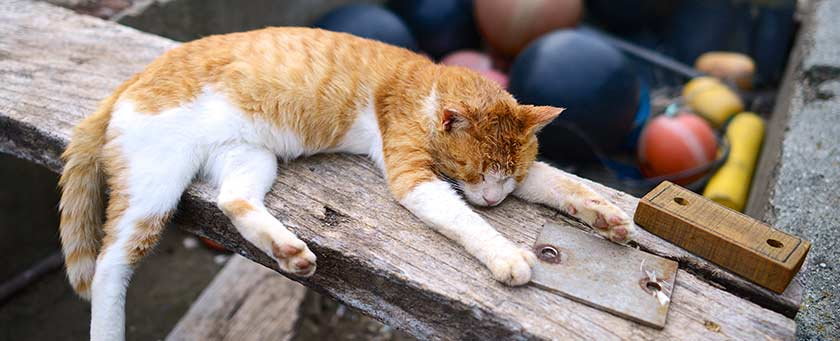

當時現況:六個月小貓跟1歲多大貓。
準備加蓋的垃圾桶-我們家的大貓對垃圾桶是沒什麼興趣的，也有可能他剛來我們家時我跟他說”我們永遠都有東西吃，不要翻垃圾桶喔~”這孩子很乖，我說了幾次之後他就不趴在垃圾桶上望了。
小貓可不同了，無聊就刁裡頭的東西出來咬或是打翻垃圾桶之類的，後來我只好買了加蓋垃圾桶。現在他偶爾也會玩廁所的衛生紙垃圾桶，咬裡面的衛生紙出來用嘴巴撕爛，有沒有吃下去我不知道，若有就是連擦過大便的衛生紙也…
紗窗篇-大貓很乖，不會破壞紗窗~小貓則是老愛爬上紗窗或窗簾當蜘蛛貓，或是在紗窗上磨爪(明明就有紙箱、貓抓板!)。開紗窗，跑去陽台玩然後把髒腳印帶到你的床上。(我沒有把紗窗做打不開的防護，倒是陽台有架鐵網防貓跳樓)若你家貓咪會抓蚊子你就不會被蚊子咬，若不會，蚊子就會開心的飛進來吸血囉~紗窗也會因為貓爪的關係有些洞會”大”一些。
可能一直更換的砂盆-我家大貓什麼都好，什麼都乖，就是不會蓋砂。或許是天生潔癖，他尿尿時撥砂不會有太大問題，但大便時就很怕自己的大便弄到自己，所以貓掌到處亂撥(砂盆旁的牆壁啦，撥砂盆外面啦)反正撥的都不是該撥的地方，常常撥很久才把大便蓋起來，彷彿有了大便的貓砂就不是貓砂般。小時候還曾經把遠遠的浴室前腳踏墊拉到砂盆中蓋大便…(我都不懂他怎辦到的，用叼的?)還有PS2的電玩手把也被他托進去過…
小貓就很會蓋砂，俐落又乾淨，極有天份。
每天都要掃地-記得剛養貓時大概天天都擦地或兩天擦一次套房地板啊~現在可沒那麼勤快了，只剩下天天掃地。因為使用礦砂的關係，地板都會有貓咪撥出來或帶出來的砂子，不掃不行的。
家具、衣服，所有東西易有砂塵、貓毛-砂塵是因為貓砂的關係，當然跟日積月累的外來灰塵也有關係，總而言之家比較容易髒。貓咪的毛也會掉落在家的四周、你的衣物上，睡覺的床上。(我們家貓咪開放跟人睡不關籠)
開銷增加-每月貓砂、貓飼料這些都還好，比較貴的是貓咪醫藥費、初期預防針費用。
睡眠可能被干擾-我家自從多了新成員小貓後，他們就常常在快天亮時開運動會在家裡暴衝(明明是6坪套房還是衝得很開心啊~)，怎罵都罵不聽，打也不聽，最後只好把小貓關籠，不過小貓來我家兩個月後晚上有越來越乖的傾向呢。不過也有”少數”兩隻貓待一起很乖的情況。
家裡東西要收好-玻璃易碎類、特定花類(食後可能會中毒)、貓咪不可接觸的食物類(可能會導致中毒)。反正東西只要貓咪看得到，他們有興趣玩得話，你的東西就可能亂跑，例如地板上或某個看不見的角落…
被貓咪抓傷-我家貓貓都還滿乖的，都很溫和，只有在抓他們剪指甲或餵藥點藥水時他們要逃脫才會不慎被抓傷，但都只是淺淺的抓痕，他們從未惡意抓傷我過，只是要逃時一定要伸出指甲才有抓地力，這時我們的手啊~腿的就中獎了。不過貓咪個性都不一定，每隻貓個性情不同，也有不會抓人的，也有真的很大力抓傷主人的。
被貓咪咬傷-我家貓貓可能都感受得到我們的愛，不會咬傷我們。小貓在有所求或無聊時會有咬人的習慣(通常在你睡覺時偷咬你一口)，但只是輕輕的咬並不是真咬，希望他長大會改善。(不過前陣子他半夜咬我好多次，害我睡眠中斷我很火大)
永遠使用完畢要蓋上的馬桶蓋-這狀況只發生在我家小貓身上，愛喝馬桶水、愛撥馬桶水。
抓花的床墊、衣櫥-又是我家小貓，記憶床墊套已被他抓到毛了，衣櫥他倒是沒抓過，愛抓紗窗。
貓咪趁開門時偷溜的可能-我家小貓來到我家一個月後就開始會趁我們回家或出門時從門縫鑽出去探險，我們住的是大樓，好險出去不是馬路。他跑出去也是不走遠，單純想看看外面長怎樣，好險我們都還抓得住，抱得起來。後來我們開門時都會特別注意或嚇他，他就比較不敢溜出去了，哈哈!(也有可能有幾次用籠子帶他們去大賣場吃爭鮮，小貓知道外面的恐怖也比較聽話了)
出遠門貓咪不知安置哪裡的困擾-有錢沒有解決不暸的事情…寵物寄宿不便宜呢~一般的醫院/寵物店”關籠”寄宿一天大約200-350不等，關籠又不健康，所以我傾向寵物旅館，就是有隔間，貓咪活動空間大但相對費用也高些，好一點的一天399-700不等(提供遠端視訊監控功能，讓你放心出遠門喔~)。一天還好，但若要出國，幾天下來這費用可不少啊~寄放朋友家也不放心~實在對於養貓新手很傷腦筋啊~
以上是我目前想到養貓咪生活上會出現的改變，可以給準備養貓的大家參考囉~
養寵物前做好心理準備，總比養後不適應想棄養好喔~(我承認我曾經氣到想把我的皮小貓丟掉或送還中途過XD)但後來因為送走對他來說太殘忍了作罷。
此篇說的都是養貓的缺點，下次再發一篇養貓的優點喔!!~不過有愛就能包容一切，以上種種我相信都能克服的。